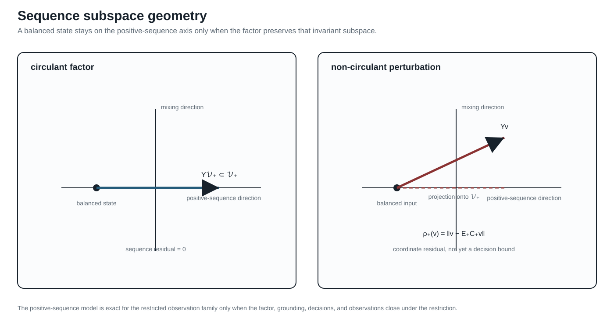

When the general model collapses
Page status: controlled positive-sequence specialization with factor- and network-level executable witnesses; global decision equivalence and external review remain open.
Scope: three-phase linear factors and networks with cyclic symmetry, balanced boundary data, and positive-sequence observations. Evidence: sequence-coordinate derivation, balanced transmission witness, and independent numerical reimplementation of that fixture. Numerical optimality: the witness is not a global nonlinear OPF result. Unresolved boundary: exactness for untransposed or unbalanced networks, phase-specific decisions, and external mathematical review.
The general multiconductor, multi-terminal model is a baseline for preserving meaning. It is not a claim that every study needs all of that structure. This chapter gives a positive derivation of the familiar balanced positive-sequence bus–branch model and lists the assumptions that make the collapse admissible.
The balanced invariant subspace
Let a three-phase two-terminal factor use the phase order $(a,b,c)$ and the Fortescue matrix $\mathbf F$
This is the classical symmetrical-coordinate construction introduced by Fortescue [19]. The transform itself is always invertible; sequence decoupling is not. Decoupling requires the phase-domain operator, including connected series/shunt factors and grounding, to leave the sequence subspaces invariant.
\[\mathbf v_{abc}=\mathbf F\mathbf v_{012}, \qquad \mathbf F=\begin{bmatrix}1&1&1\\1&a^2&a\\1&a&a^2\end{bmatrix}, \qquad a=e^{\mathrm j2\pi/3}.\]
The positive-sequence subspace is
\[\mathcal V_+=\{\mathbf F[0,V_1,0]^{\mathsf T}:V_1\in\mathbb C\}.\]
An exactly balanced operating point has phase voltages and currents in this subspace, with the corresponding phase shifts. Balance is a restriction on the admissible state and injections; it is not created by drawing one edge per bus pair.
Factor-level assumptions
Consider a linear series or nominal-$\pi$ factor with phase-domain relation $\mathbf i=\mathbf Y\mathbf v$. A sufficient exact-collapse contract is:
- compatible phase sets: every retained terminal has the same ordered three-phase set, with no unresolved neutral or earth port;
- cyclic symmetry: each series and shunt matrix commutes with the cyclic phase permutation, equivalently it is circulant in the declared phase coordinates;
- balanced boundary data: sources, injections, and measurements are restricted to $\mathcal V_+$;
- sequence-compatible grounding: zero- and negative-sequence return paths are either absent from the study or represented by fixed factors whose constraints are not queried;
- two-terminal closure: each device is already a two-terminal factor, or a multi-terminal device has an explicitly verified positive-sequence compilation;
- decision symmetry: controls are common to all phases, and limits, costs, and admissible states are invariant under the same phase symmetry;
- observation restriction: the study does not ask for phase-specific, neutral-to-ground, negative-sequence, zero-sequence, or internal winding quantities.
Under these assumptions, $\mathbf F^{-1}\mathbf Y\mathbf F$ is diagonal in sequence coordinates, and the positive-sequence block is invariant:
\[\mathbf Y_{012}=\mathbf F^{-1}\mathbf Y_{abc}\mathbf F =\operatorname{diag}(Y_0,Y_1,Y_2), \qquad I_1=Y_1V_1.\]
Transposition alone is therefore not an exact positive-sequence reduction. It can support a balanced or approximately cyclic model, but exact restricted closure still requires the operator, grounding, devices, limits, controls, and observations to respect the declared sequence symmetry.
For a nominal-$\pi$ factor, the same statement applies to the series and shunt blocks separately. The positive-sequence network is therefore a derived two-terminal scalar complex network with one voltage and current per bus/arc, provided the factor library and decision constraints close under the restriction.
The generated witness experiments/generated/positive-sequence-collapse-witness.json diagonalizes one circulant impedance matrix to numerical precision and records a non-circulant perturbation that mixes sequences. The companion experiments/generated/balanced-transmission-witness.json assembles a three-bus, two-arc nominal-$\pi$ network with the same cyclic series and shunt factors. It solves the reduced phase-domain equations and the scalar positive-sequence equations independently, embeds the scalar voltages and branch currents, and checks their residuals. The result is a network-level positive example for the declared balanced observation family, not a global decision-equivalence theorem.
The generated comparison experiments/generated/balanced-transmission-independent-reproduction.json repeats the phase-domain and scalar solves with a separate standard-library complex Gaussian-elimination implementation. It matches the Julia voltages, residuals, and branch-current checks row-for-row. This is independent numerical reproduction of the declared fixture, not independent review of the modelling assumptions or a standards-aligned transmission validation.

The geometry is a projection aid: the circulant factor leaves the positive-sequence axis invariant, while the perturbed factor produces an off-axis residual. The residual $\rho_+$ is a coordinate diagnostic until propagated through constraints and decisions.
Network-level derivation
Let $C_+$ restrict a general model to the positive-sequence subspace and let $E_+$ embed a positive-sequence state into phase coordinates. Under the factor, boundary, and decision assumptions above,
\[\mathcal F_{+}=C_+(\mathcal F_{abc}), \qquad E_+(\mathcal F_{+})\subseteq\mathcal F_{abc},\]
and the declared observations agree on the embedded balanced states as
\[h_{abc}\circ E_+=\widehat h_+.\]
This is a restricted factorization on $E_+(\mathcal F_+)$. It is not the stronger global identity $h_{abc}=\widehat h_+\circ C_+$ on arbitrary phase-domain states.
Thus the positive-sequence model is exact for the restricted observation family $H_+$. It is not exact for the unrestricted phase-domain feasible set unless every feasible phase-domain point is balanced, which is a much stronger statement.
For an approximately balanced model, define the residual of a phase-domain state $v$ by
\[\rho_+(\mathbf v)=\left\|\mathbf v-E_+C_+\mathbf v\right\|.\]
This is a coordinate residual, not a decision-error bound. A voltage residual must be propagated through the factor equations and constraints before it can support an engineering approximation claim.
What collapses, and what does not
| General object | Positive-sequence image | Required qualification |
|---|---|---|
| three phase voltages/currents | one complex sequence variable | only balanced states are represented |
| circulant series and shunt matrices | scalar $Y_1$ blocks | non-circulant coupling produces sequence mixing |
| identical phase limits and common controls | one sequence limit/control | phase-specific constraints are outside the image |
| two-terminal factor | oriented bus–branch arc | multi-terminal devices need a verified compiler |
| neutral/earth factor | omitted or externally resolved | grounding and zero-sequence questions are forgotten |
| phase-specific measurements | aggregate sequence observation | not preserved by the quotient |
The running fixture intentionally fails several guards: it has four-wire lines, an explicit grounded neutral, nonuniform terminal sets, a phase permutation, unbalanced loads, full coupled matrices, and a three-winding transformer. It is therefore a test of the general model, not a balanced positive-sequence witness. The transmission specialization must be a separately declared fixture or a parameterized subcase with its own residual and checks.
“Use a positive-sequence model” is a modelling decision with assumptions, not a graph-theoretic simplification. State the balance, transposition, grounding, equipment, limit, and observation assumptions before treating the resulting bus–branch graph as exact.
Decision consequence
The positive-sequence collapse is exact for a restricted decision problem when the feasible-set inclusion, recovery embedding, and observation factorization above hold. If a contingency opens one phase, a relay observes zero sequence, a transformer has phase-dependent taps, or a conductor limit becomes active, the decision domain has left $\mathcal F_+$. The general port–factor model or an explicitly guarded intermediate model is then required.